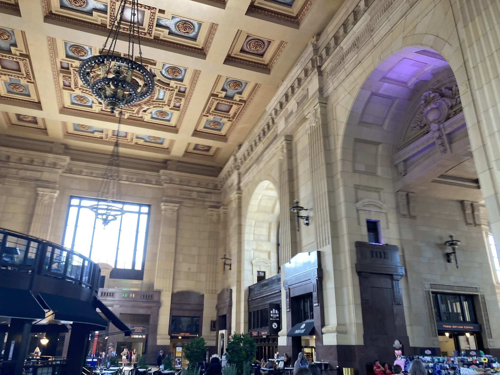
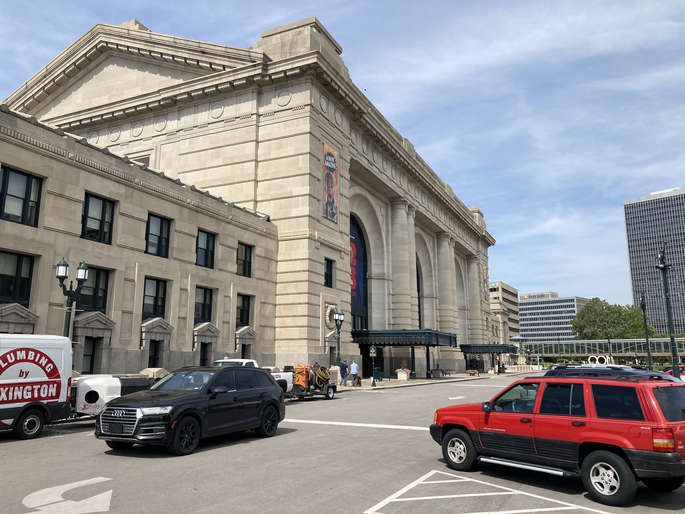

Brandon's parents, Claudia and Gene, live on the outskirts of Lee's Summit, to the south-east of Kansas City in Missouri. Victoria, Austin and Juniper were staying there until the house they had rented in Fayetteville was available.
So on Saturday 26th July we had another early start. We checked out of the hotel, took the subway to Union Station and the UP Express to Toronto Pearson airport. We found the Delta counter and a helpful person checked us in to both our flights and put labels on to our cases. There was no charge because they were only carry-on size. You can volunteer to check your bag at the gate for free. Then it was a two-hour flight to Atlanta, followed by a one and a half hour flight to Kansas City. The latter was delayed by about 50 minutes. I'd been to Atlanta airport before and new that an underground train took you between terminals (that, at Atlanta, they call Concourses).
Brandon had gone back to Lee's Summit for the weekend and had driven Victoria and the children to the airport (which is to the north-west of the city). We had a short wait after picking up our cases before Victoria appeared. It seems that they were not allowed to stop, so Brandon drove around the block and then pulled in to pick us up. He then drove us to Lee's Summit, where we met Gene and Claudia at their house. They went to bed early, as they usually do, and we had a bite to eat.
By the time we got up on Sunday morning, Gene and Claudia had gone to church. Brandon then took us to a restaurant for breakfast! When we got back we did some jigsaw puzzle until we stopped for some mango for lunch.
Claudia had been cooking some beef, which we had for an early dinner along with home-grown, courgettes, round beans and potatoes (Gene is keen on growing vegetables). We had bread rolls as well. Then we had cherry pie and played a card game until they went to bed (before eight).
On Monday morning Gene and Claudia took us for a tour of Kansas City, pointing out the landmarks as they drove. We then went to a Kansas barbecue restaurant for lunch. As usual, a lot of food. Afterwards we went to Union Station to see it and a collection of model railway layouts. They were very good. In fact, the station is quite impressive. The main hall is only used for exhibitions nowadays, but it retains its height and ornate ceiling.
 Tuesday was another day out. This time Claudia took Victoria, Angela and I (the children stayed home with Gene). This time we went in the opposite direction, to Independence, to visit the President Harry S. Truman Library. It seems that each President builds a library (a combination of a museum and an archive for all their official papers).
It was hot in Missouri, the car was indicating that the outside temperature was 100°F!
Since Truman came to power just prior to the second world war and through the Korean war there was a lot to read. We didn't finish until after one, so we stopped at a restaurant in Independence for some lunch, getting back home after three. It was still very hot.
Wednesday saw another outing to Kansas City, this time to a museum about a paddle steamer that sunk in the Missouri river in 1838 (or thereabouts) and was found, buried 30 feet down in a farmers field. The boat had sunk in the mud and over the years the river had meandered and left the boat under dry land. It was an interesting story and the artefacts recovered were fascinating.
We were back in Lee's Summit for a slightly late lunch and then spent the rest of the afternoon completing the 'marbles' jigsaw puzzle that they had started before we arrived. It was a very difficult one. After dinner we played a card game and then packed our bags.
| Return to Canada &: USA | © David James 2025 Last updated: 29th August 2025 |